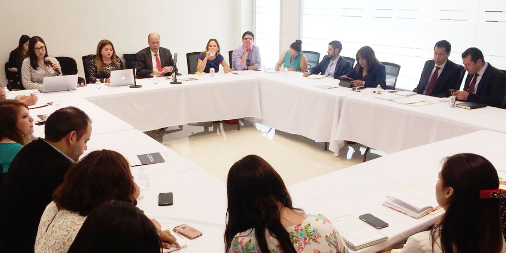
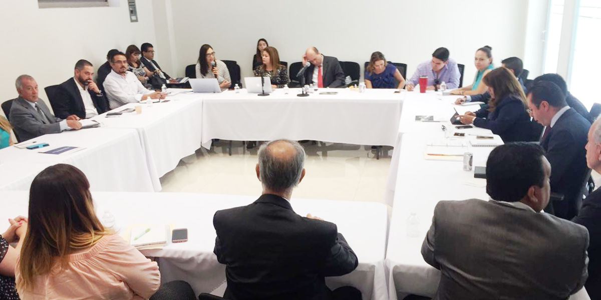

Dialogan USAID e Integrantes del SEA Coahuila con Organizaciones de la Sociedad Civil y Universidades
SEA Coahuila - 12 July 2018
Saltillo, Coahuila a 12 de Julio de 2018.
Con el objetivo de identificar mecanismos de cooperación en materia anticorrupción, representantes de la Agencia de los Estados Unidos para el Desarrollo Internacional (USAID) y del Sistema Estatal Anticorrupción, sostuvieron reunión de trabajo con integrantes de la Sociedad Civil y Universidades.

El encuentro realizado en la sede de la Secretaría Ejecutiva del Sistema Anticorrupción de Coahuila, fue encabezado por el director de proyectos de USAID, Eduardo Flores Trejo y por la titular de la Secretaría Técnica del SEA, Marcela Castañeda Agüero quienes dieron la bienvenida a los asistentes.
También se contó con la participación de representantes de la Fiscalía Especializada en Delitos por Hechos de Corrupción, del Instituto Coahuilense de Acceso a la Información Pública, de la Auditoria Superior del Estado, del Poder Judicial del Estado, del Tribunal de Justicia Administrativa, del Consejo de Participación Ciudadana y de la Secretaría de Fiscalización y Rendición de Cuentas del Estado.
Por parte de las Organizaciones de la Sociedad Civil asistió en representación de Participación Ciudadana 29 (PC29), Talía Romero Muñiz y del Consejo Cívico de las Instituciones de Coahuila, Alejandra Wade Villanueva.
De la Universidad Autónoma de Coahuila acudió a la reunión el Secretario General, Miguel Ángel Rodríguez Calderón; de Universidad La Salle Saltillo, Felipe Pérez Gavilán Torres y por la Universidad Iberoamericana Campus Saltillo, Juan Antonio Franco Valdés.
El encuentro se centro en el intercambio de experiencias, las cuales darán pie a la conformación de planes y programas para la difusión y capacitación en materia anticorrupción, como parte del "Proyecto Promoviendo la Transparencia en México" impulsado por la USAID entre instancias gubernamentales y de la sociedad civil en todo el país.
